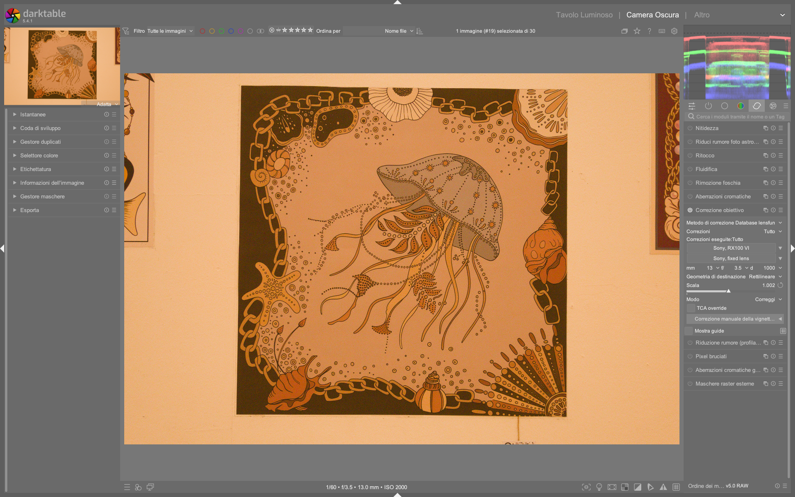

Lens Correction¶
Il modulo lens correction è il punto di partenza tecnico della pipeline darktable per la correzione ottica automatica e manuale. Gestisce tre difetti fisici fondamentali introdotti dall’obiettivo: distorsione geometrica, aberrazione cromatica trasversale (TCA) e vignettatura fotometrica, in modo non distruttivo e basato sui dati EXIF o sul database esterno Lensfun1. A partire da darktable 5.4, il modulo supporta anche la simulazione inversa di tali difetti (distort mode), utile per effetti creativi o test di calibrazione1.
Correzione lente = primo passo obbligatorio
Il modulo lens correction deve essere applicato prima di qualsiasi regolazione tonale o cromatica. Correggere distorsione o TCA dopo un tone mapping come AGX può generare artefatti di interpolazione irreversibili e degradare la qualità dei bordi13.
Panoramica¶
Il modulo opera su due livelli distinti:
- Correzione automatica: basata su profili precaricati (Lensfun) o metadati embedded (DNG, Adobe), che richiedono solo la selezione corretta di camera e lens.
- Affinamento manuale: per casi in cui i profili sono incompleti, assenti o insufficienti — soprattutto per vignettatura e TCA.
Il modulo non modifica i dati RAW sottostanti, ma applica trasformazioni geometriche e fotometriche nella pixelpipe. In caso di correzioni forti, darktable riempie i pixel mancanti ai bordi ripetendo i valori dei bordi stessi (edge replication), un comportamento visibile su immagini rumorose o fortemente distorte1.
Flusso di lavoro consigliato¶
Il flusso ideale segue una sequenza rigorosa per massimizzare precisione e prevenire artefatti:
1. Importazione → verifica EXIF (camera/lens/focal length)
|
2. Lens Correction → attiva automaticamente tramite preset
|
3. Rotate & Perspective → raddrizza linee dopo la correzione geometrica
|
4. Crop → ritaglia bordi neri residui (opzionale ma raccomandato)
Automatizza con i preset
Per ogni obiettivo utilizzato frequentemente, crea un preset automatico:
- Apri una foto scattata con quel corpo + obiettivo
- Verifica che camera e lens siano identificati correttamente
- Clicca sul menu a hamburger (⋮) del modulo → Salva nuovo preset
- Nelle condizioni, imposta model = nome esatto dell’obiettivo (es. Sigma 18-35mm f/1.8 DC HSM)
- Spunta Applica automaticamente3.
Passo 1: Scelta del metodo di correzione¶
Scegli tra tre modalità principali nel menu correction method:
| Metodo | Quando usarlo | Note tecniche |
|---|---|---|
| Lensfun database | Obiettivo supportato da Lensfun (90% dei moderni) | Richiede lensfun-update-data aggiornato; supporta tutti i parametri (distorsione, TCA, vignettatura)1 |
| Embedded metadata | File DNG o RAW con profili Adobe integrati | Disponibile solo se i metadati contengono dati di correzione; meno flessibile su focal distance1 |
| Only manual vignette | Profilo Lensfun assente o inadeguato, ma si vuole comunque correggere la vignettatura | Non applica distorsione né TCA; usa solo i controlli manuali sotto1 |
TCA e raw chromatic aberrations: evita il doppio intervento
Se abiliti la correzione TCA qui, disattiva il modulo raw chromatic aberrations. L’applicazione simultanea causa over-correction e artefatti cromatici ai bordi (frange viola/ciano)1.
Passo 2: Parametri fotometrici critici¶
I profili Lensfun dipendono da tre parametri letti dai metadati EXIF:
| Parametro | Range tipico | Default | Funzione |
|---|---|---|---|
| Focal length | 8–2000 mm | Auto (da EXIF) | Determina intensità di distorsione e TCA; fondamentale per zoom1 |
| Aperture | f/1.2–f/32 | Auto (da EXIF) | Influenza forza della vignettatura e TCA; molti obiettivi non registrano aperture variabili1 |
| Focal distance | 0.2 m – ∞ | Non registrato (spesso vuoto) | Critico per la vignettatura: impostalo manualmente se il valore è zero o errato1 |
✅ Valore tipico per paesaggio:
focal distance = ∞
✅ Valore tipico per ritratto:focal distance = 1.5–3.0 m
❌ Non lasciare vuoto: se manca, la vignettatura sarà inaccurata1.
Parametri principali¶
Controlli Lensfun (metodo selezionato)¶
| Parametro | Range | Default | Descrizione |
|---|---|---|---|
| Target geometry | rectilinear, fisheye, panoramic, equirectangular, orthographic, stereographic, equisolid angle, Thoby fisheye |
rectilinear |
Cambia la proiezione dell’immagine: usare fisheye per correggere obiettivi fish-eye, panoramic per immagini stitched1 |
| Scale | 0.70–1.50 | Auto | Ridimensiona l’immagine per evitare angoli neri dopo correzione; il pulsante auto scale calcola il fattore ottimale1 |
| Mode | correct (default), distort |
correct |
In distort, inverte gli effetti: simula distorsione di un obiettivo specifico (utile per test o effetti)1 |
| TCA overwrite | checkbox | disattivato | Abilita i controlli manuali TCA red / TCA blue1 |
| TCA red | -100.0–+100.0 | Auto | Compensa lo shift cromatico del canale rosso; spostalo finché le frange rosse ai bordi non scompaiono1 |
| TCA blue | -100.0–+100.0 | Auto | Compensa lo shift cromatico del canale blu; spostalo finché le frange blu non scompaiono1 |
Come rilevare la TCA
Zooma al 100% su un bordo ad alto contrasto (es. orizzonte contro cielo). Cerca frange rosse (sul lato destro del bordo) o blu (sul lato sinistro). Regola TCA red/blue fino a farle scomparire1.
Controlli Embedded Metadata (metodo selezionato)¶
| Parametro | Range | Default | Funzione |
|---|---|---|---|
| Use latest algorithm | checkbox | disattivato | Abilita l’algoritmo di correzione più recente (richiede ricarica immagine)1 |
| Fine-tuning button | toggle | nascosto | Espande i controlli manuali per distorsione, vignettatura, TCA red/blue e scala immagine1 |
Controlli Manual Vignetting Correction¶
Attivabile cliccando il pulsante manual vignetting correction, indipendentemente dal metodo scelto:
| Parametro | Range | Default | Effetto pratico |
|---|---|---|---|
| Strength | -100% – +100% | 0% | Valori positivi schiariscono i bordi; negativi li scuriscono ulteriormente1 |
| Radius | 0% – 100% | 50% | Area centrale non modificata: 50% = cerchio che copre metà larghezza/altezza1 |
| Steepness | 0% – 100% | 50% | Gradualità della transizione: 0% = transizione morbida, 100% = transizione netta1 |
✅ Valore tipico per correzione standard:
strength = +20%,radius = 65%,steepness = 70%
🔍 Visualizza la maschera: clicca l’icona mask accanto astrengthper vedere l’area influenzata1.
Consigli avanzati¶
Identificazione errata di obiettivo¶
Se Lensfun non riconosce correttamente il tuo obiettivo (es. obiettivo terzo produttore o adattato), segui questa procedura:
- Clicca su
lens→ cerca manualmente nel menu a tendina il modello più vicino - Se usi un adattatore (es. Canon EF su Sony E-mount), esegui prima
lensfun-add-adapterper abilitare i profili compatibili1 - Se il profilo è assente, verifica la lista ufficiale: lenslist.lensfun.github.io, quindi esegui
lensfun-update-data1
Correzione per obiettivi anamorfici¶
Per obiettivi anamorfici, non usare target geometry. Usa invece il modulo rotate and perspective per correggere il rapporto d’aspetto e la distorsione verticale/horizontale separatamente1.
Performance e artefatti¶
- Le correzioni forti (distorsione > ±30%, TCA > ±50) possono causare aliasing o ringing ai bordi
- Se vedi pixel bianchi/neri ai bordi dopo correzione, applica un leggero crop (anche 1–2 px) per rimuovere i bordi replicati1
- Su CPU vecchie o senza OpenCL, attiva fast preview nel modulo per accelerare il rendering in tempo reale1
Esempio: Correzione TCA su immagine urbana con skyline nitido¶
Da A Dabble in Photography — Lens Correction Workflow (timestamp 2:40)
1. Attiva lens correction e seleziona correction method = Lensfun database
2. Imposta TCA overwrite = on per sbloccare i controlli manuali
3. Zooma al 100% su un edificio con contorno netto contro il cielo
4. Regola TCA red = +12.3 e TCA blue = -18.7 finché le frange cromatiche ai bordi verticali scompaiono
5. Verifica che mode = correct e scale = auto sia attivo2
Esempio: Simulazione distort per test di calibrazione¶
Da darktable user manual — lens correction (section “mode”)
1. Seleziona correction method = Lensfun database
2. Imposta mode = distort
3. Scegli target geometry = fisheye
4. Imposta focal length = 8mm, aperture = f/3.5, focal distance = 0.5m
5. Regola scale = 0.92 per mantenere l’intera cornice visibile senza tagli1
Domande frequenti¶
Problema: messaggio rosso “camera lens not found”¶
Questo errore compare quando darktable non trova un profilo Lensfun corrispondente alla combinazione esatta di camera + lens nei metadati EXIF. La soluzione non è modificare i metadati, ma selezionare manualmente un profilo compatibile: apri il menu a tendina lens, espandi la voce “other lenses”, e scegli il modello più vicino (es. Canon EF-S 10-22mm f/3.5-4.5 USM anziché Canon EF-S 10-22mm f/3.5-4.5 USM II, se assente). Se nessun profilo funziona, esegui lensfun-update-data e verifica la presenza del tuo obiettivo su lensfun.github.io/lenslist1.
Problema: vignettatura corretta male nonostante EXIF corretti¶
La vignettatura dipende criticamente da focal distance, parametro raramente registrato dai sensori. Se il valore è zero o assente, la correzione sarà sistematicamente errata. Imposta manualmente focal distance = ∞ per paesaggi, 1.5–3.0m per ritratti, 0.5–1.2m per macro. Verifica l’effetto attivando la maschera (mask accanto a strength) e confrontando con l’anteprima senza correzione1.
Problema: distorsione residua dopo correzione automatica¶
Alcuni obiettivi zoom (es. Tamron 28-75mm f/2.8 G2) mostrano errori residui di distorsione radiale oltre il ±5% a determinate focali. In questi casi, abilita TCA overwrite e usa i cursori distortion (nella sezione fine-tuning per embedded metadata) o distortion (nel modulo rotate and perspective se lens correction è disattivato) per affinamenti sub-pixel: valori tipici sono distortion = +2.1 per under-corrected barrel o -3.8 per over-corrected pincushion1.
Preset built-in¶
darktable 5.4 include preset preconfigurati per scenari comuni, accessibili dal menu a tendina in alto nel modulo. Questi preset non richiedono configurazione manuale e si applicano immediatamente.
| Preset | Quando usarlo | Note |
|---|---|---|
Auto (from EXIF) |
Default: attivato automaticamente all’apertura | Usa i metadati EXIF per caricare profilo Lensfun; richiede camera/lens ben identificati1 |
Rectilinear wide-angle |
Obiettivi grandangolari (≤24mm FF equivalente) con distorsione barrel marcata | Applica target geometry = rectilinear e scale = 1.05; ottimizzato per Nikon Z 14-30mm f/41 |
Fisheye 180° |
Obiettivi fish-eye circolari (es. Samyang 8mm f/3.5) | Imposta target geometry = fisheye, scale = 0.85, mode = correct; disabilita TCA1 |
Panoramic equirectangular |
Immagini stitched da software esterno (Hugin, PTGui) | Imposta target geometry = equirectangular, scale = 1.0, corrections = none; preserva la geometria sferica1 |
Riferimenti visuali¶

{kind=link}
Risorse aggiuntive¶
- 📘 darktable User Manual — Lens Correction — Documentazione ufficiale completa1
- 🎥 A Dabble in Photography — Lens Correction Workflow — Tutorial pratico con correzione manuale di TCA2
- 🌐 Lensfun Project — Supported Lenses — Lista aggiornata di obiettivi supportati1
- 🛠️ lensfun-update-data — Manuale CLI — Aggiorna il database localmente1
Fonti¶
-
darktable user manual - lens correction, https://docs.darktable.org/usermanual/development/en/module-reference/processing-modules/lens-correction/ ↩↩↩↩↩↩↩↩↩↩↩↩↩↩↩↩↩↩↩↩↩↩↩↩↩↩↩↩↩↩↩↩↩↩↩↩↩↩↩↩↩
-
[ENG] Comparison Darktable vs C1 vs LR, A Dabble in Photography, https://www.youtube.com/watch?v=TahuhILulgY ↩↩
-
Manuale_Flusso_Lavoro_darktable, Capitolo 2.1 — Correzione lente, Aprile 2026 ↩↩